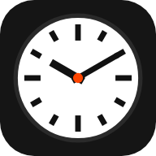

MONDAINE
Swiss
Watch
A
Dl
Dt
Dc
Dj
Dv
Ds
Dg
…
🌡️
--°
--
--
--
--
Properes 12 hores
Propers 5 dies
–
—
—
—
—
—
Sant del dia
—
Efemèride
…
Sol
Surt
--:--
Es pon
--:--
—
—
Lluna
Surt
--:--
Es pon
--:--
—
—
Properes 12 hores
—
…
Índex europeu de qualitat de l'aire
PM2,5
—
PM10
—
NO₂
—
O₃
—
…
--
--
En directe
La Competència · RAC1
Carregant programes…
Via lliure
7 h
Carregant…
ACN · Al minut
Carregant titulars…
CA
CA
FR
DE
IT
EN
Població
—
Ara sona
—
Per molts anys
—
Aniversari
Opcional · només es desa en aquest aparell
Nom
Data de naixement
Esborra
Desa

×